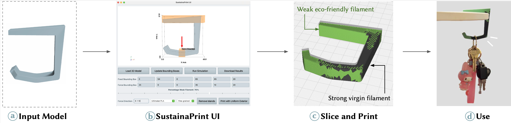
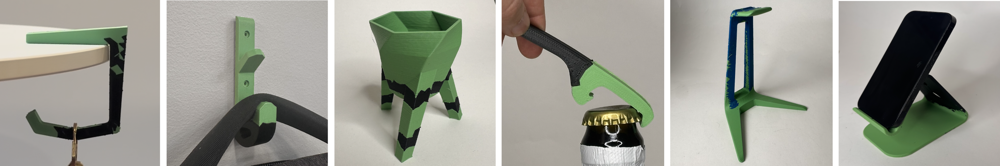
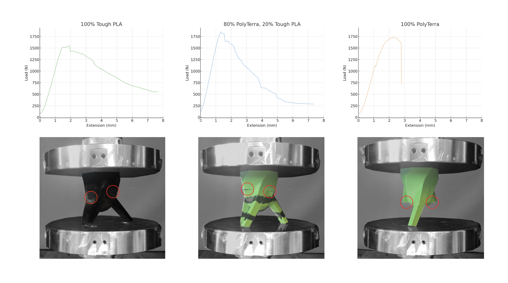

SustainaPrint: Making the Most of Eco-Friendly Filaments

Figure 1. SustainaPrint assigns eco-friendly and standard filaments to different regions of multi-material prints, reinforcing likely-to-fail areas while maximizing sustainable material elsewhere.
ABSTRACT
We present SustainaPrint, a system for integrating eco-friendly filaments into 3D printing without compromising structural integrity.
While biodegradable and recycled 3D printing filaments offer environmental benefits, there is a trade-off in using them as they may suffer from degraded or unpredictable mechanical properties, which can limit their use in load-bearing applications.
SustainaPrint addresses this by strategically assigning eco-friendly and standard filaments to different regions of a multi-material print—reinforcing the areas that are most likely to break with stronger material while maximizing the use of sustainable filament elsewhere.
As eco-friendly filaments often do not come with technical datasheets, we also introduce a low-cost, at-home mechanical testing toolkit that enables users to evaluate filament strength before deciding if they want to use that filament in our pipeline.
We validate SustainaPrint through real-world fabrication and mechanical testing, demonstrating its effectiveness across a range of functional 3D printing tasks.

Figure 2. Applications across everyday items (e.g., hooks, pots, bottle openers, stands): strong filament is used only where necessary to minimize virgin plastic usage while preserving function.
APPLICATIONS
SustainaPrint can be applied to a wide range of everyday items, including reinforced hooks, plant pots, bottle openers, headphone stands, and phone stands.
The system enables structurally sound designs that use strong filament only where necessary, minimizing virgin plastic usage.
For example, hooks are reinforced at mounting and hanging points, standing plant pots have reinforced bases and leg junctions, and bottle openers have strong material assigned to regions under maximum bending stress.
Phone and headphone stands are reinforced at cantilevered hooks or cradles to ensure balance and longevity.
In our experiments, prints made with high proportions of biodegradable filament retained significantly greater strength than those made entirely from recycled filament.

Figure 3. Case study: standing plant pot with reinforced base and junctions to withstand everyday loads while maximizing eco-friendly filament elsewhere.
BIBTEX
@inproceedings{Perroni-Scharf:2025:SP,
author = "Maxine Perroni-Scharf and Jennifer Xiao and Cole Paulin and Zhi Ray Wang and Ticha Sethapakdi and Muhammad Abdullah and Patrick Baudisch and Stefanie Mueller",
title = "SustainaPrint: Making the Most of Eco-Friendly Filaments",
booktitle = "The 38th Annual ACM Symposium on User Interface Software and Technology (UIST '25)",
year = "2025",
month = "September 28-October 1",
address = "Busan, Republic of Korea",
publisher = "ACM",
url = "https://doi.org/10.1145/3746059.3747640"
}
ACKNOWLEDGMENTS
We thank collaborators and reviewers for feedback, and the communities working toward sustainable 3D printing practices.